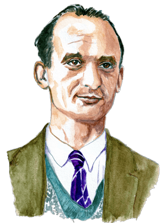

Без права на славу, во славу державы
Козлов Алексей Михайлович
«Легенды советской разведки: Алексей Козлов. В погоне за атомной бомбой». Документальный фильм
Шевченко Юрий Анатольевич
Молодый Конон Трофимович
Мёртвый сезон (фильм, 1968)

Фишер Вильям Генрихович
Правительство США Против Рудольфа Абеля. Документальный фильм
Гарольд Адриан Рассел 'Ким' Филби
'Моя тайная война', Ким Филби, 2020, ('Воениздат', 1980)
Ким Филби на сайте Кембриджская пятёрка
Григулевич Иосиф Ромуальдович
История разведчика-нелегала Иосифа Григулевича
Чиков, Владимир Матвеевич. Суперагент Сталина [Текст] : тринадцать жизней разведчика-нелегала : [16+] / Владимир Чиков. - Москва : Алгоритм, 2018. - 542, [1] с.; 21 см. - (Жизнь замечательных разведчиков).; ISBN 978-5-907028-99-9 : 1 500 экз.
Ахмеров Исхак Абдулович
Рихард Зорге
Вартанян Геворк Андреевич
Вартанян Гоар Левоновна
Правдивая история. Тегеран 43
Дейч Арнольд Генрихович
Агаянц Иван Иванович
Де Лас Эрас Африка
Вернуться на гравную страницу